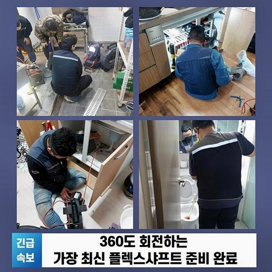
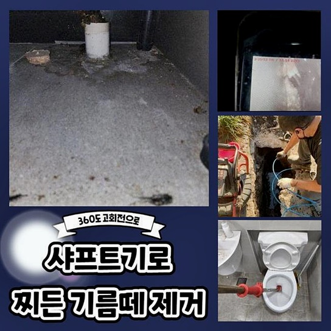
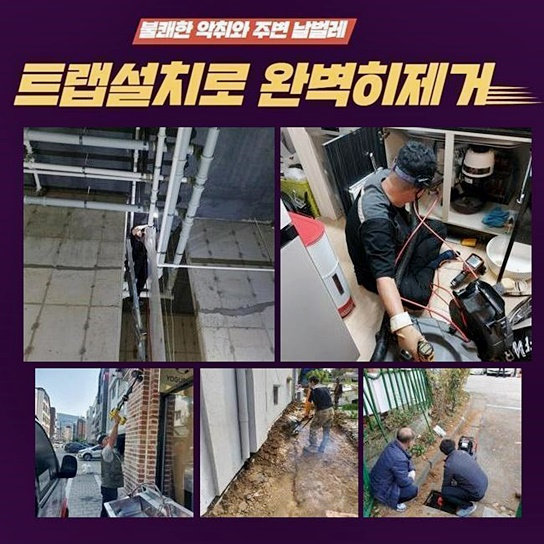
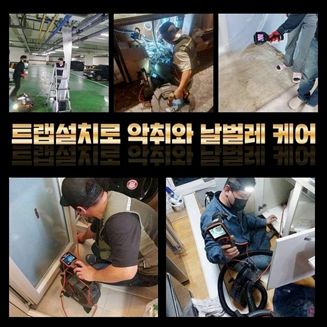
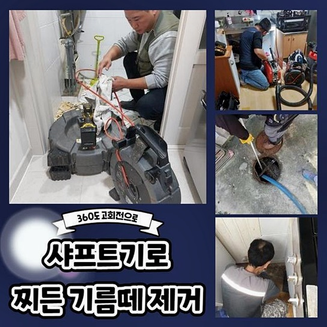
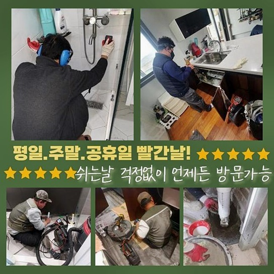
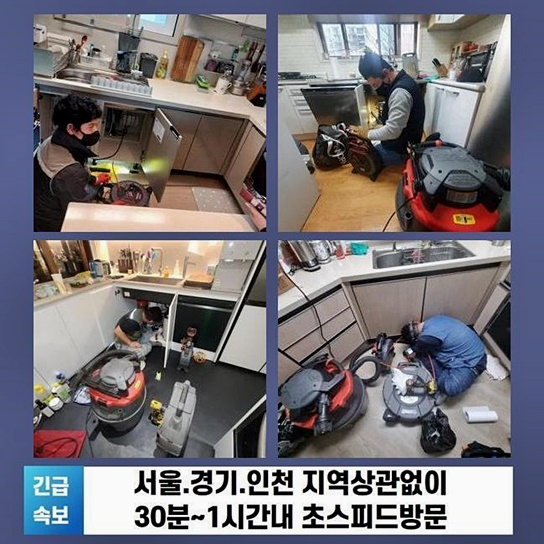

🏠 계양구 박촌동화장실막힘 목상동 하수구뚫는비용 설비하는곳
용인시 처인구 배관막힘 전문 시공 후기

📋 작업 개요
- 위치: 용인시 처인구, 수원시 영통구, 화성시 동탄
- 서비스 유형: 배관막힘, 고압세척, 내시경점검
- 작업 일시:
- 업체명: 하수구수사대 (010-5615-2118)
🔍 문제 상황
계양구 박촌동화장실막힘 목상동 하수구뚫는비용 설비하는곳
이상한 낌새도 채지 못하던 차에 급작스럽게 하수구 시설의 중단이 일어난 바람에 진땀만 흘리시던 의뢰인분의 거주지에 찾아 뵀습니다
재빠른 판단력으로 명쾌하게 바꿔드린 곳은 여러 가구가 입주한 빌딩으로 여러 명이 불편함을 절감하고 있다며 저희에게 말씀을 해오셨습니다
전화기 너머 실황을 생생하게 빠른 속도로 말씀을 주셨는데 야외의 하수구 안에서 물이 분출되어 일대가 침수됐다 하셨죠
이렇게 물이 범람을 하면 부패한 잔해들도 잔수에 녹아서 올라오니 구린내도 상당히 납니다
고온다습한 조건 하에서는 악취로 인한 고충도 더욱 증가하게 될 것입니다
빠르게 개선해드릴 수 있는 작업을 조속히 달성해야한다는 일념 하에 손놀림도 재촉하여 착수를 시작했습니다
설비가 오랜 세월이 갈 동안 보수가 된 적이 없다보니 막힘건이 생겨난 듯 생각이 되더군요
제일 추천드릴 수 있는 방향은 정해진 텀 마다 꼼꼼한 설비 상태의 점검을 하고 관리해야 한다 판단되면 청소를 이어가는 것이겠죠
의심되는 지점이 없는 나날에는 시설을 쓰시는 분들은 계획적인 유지 관리는 그다지 주목하시진 않습니다
실내 공간마다 있는 하수구도 일상 폐기물같은 크고 작은 생활쓰레기들이 눈치채지 못하는 사이에 물이랑 슬그머니 유출이 됩니다
비교적 광활한 입구의 야외 하수구는 공기 중에 부유하는 각종 찌꺼기들이 아주 간단히 유입이 되며 큰 몸체와 부피의 물질이라도 수월하게 빠져버리는 게 문제입니다
비바람이 치는 날에는 더욱 나무 조각이나 음료수 병같은 각종 잔해가 대량 유입되어 문제가 불거지게 됩니다

🔎 원인 분석
💡 전문가 진단: 정밀 진단 장비를 사용하여 슬러지의 고착 여부를 판명하고 타격/세척 작업을 실시했습니다.
일이 커지기 전에 미리 배관 점검을 거쳐주면서 막힘 위험도를 최대한으로 감축시키는 게 핵심입니다
대략적으로 현장 근처를 보니 아슬아슬하다 싶을만한 대상물들이 포진하고 있더라고요
하수구 바로 옆까지 주먹만한 돌멩이도 놓여있었고 떨어진 낙엽도 주위에 사방에 퍼져있었어요
갈곳을 잃은 이물질들은 공기 중을 떠돌다가 슬그머니 구멍 속으로 부지불식간에 빠져버리죠
이같은 일이 누적되다보면 하수구를 차단할 만큼 부피가 늘어난다면 폐기되어 모인 물들이 정상 폐기되지 못합니다
보통 짐작하는 것보다 물은 무게감이 꽤나 상당해지기에 압력이 가해지다 시설에 파손이 되기도 합니다
싱크대나 욕실 하수구에서 막힌 모습과는 딴판으로 외부의 하수관이 고장나면 가벼운 원리로 돌릴 수 있는 기기들만 써서는 좋은 성과를 내지못해요
광역으로 처리를 하는 성능을 함유하고 있는 고스펙 장치로 힘차게 씻어주는 게 필요합니다
오늘 현장의 특성은 세밀한 탐사를 거치지 않더라도 눈으로 들여다봐도 속사정을 훤히 내려다볼 수 있었습니다
진입로가 여유가 있어서 특별한 기기 없이도 오염물이 누적된 사태임이 드러났거든요
기하급수적으로 쌓인 오물들이 안쪽에 접착되어서 배관을 압박할 수도 있는 모양새로 보였습니다
비교적 굵고 단단하지만 단단하게 돌처럼 굳은 오물들은 크고 작은 갈라짐을 유발하거나 부실한 구간이 떨어져나갈 수 있어요
내부의 이모저모를 바라보며 데이터를 내보니 배관 전반부의 세정 작업을 완수해야 한다는 판단이 들었죠
즉각 실시하는 것이 아니고 내시경을 더 심층부까지 도달시켜서 좀 더 구체적으로 판별했습니다

🔧 작업 과정
커다란 옥외 하수시설은 육안으로 인식이 가능한 분야 및 다른 곳도 철저히 진단을 해봐야 합니다
앞서 짚어내지 못했던 요인이 시발점이 되어 유사한 장애물이 다시 반복될 경우의 수도 무시 못하기 때문이죠
예리하게 아래까지 관찰한 노력 끝에 알게된 점은 아래에도 상당량의 물질이 숨어있더군요
짓무른 낙엽이 진흙탕에 섞여 정체불명의 변형이 일어난 오염원이 똘똘 뭉쳐져서 의심하고 체크를 해줬기에 문제를 예방한 것 같아 뿌듯했어요
보통 하수구 배관이 마비되어 버린다면 점도가 있는 기름기 어린 물질을 파쇄하는 드릴로 회전하는 플렉스샤프트를 적용하는 편입니다
이번 현장같은 규모는 샤프트 기기로만 수습을 해주기에는 시간이 한참 소요될 듯 싶었습니다
깊숙하게까지 들어가고 지름 자체도 컸기 때문에 석션으로 개별적으로 흡입하기도 난해하다고 판단됐습니다
따라서 고압수 세척 커다란 작업도구로 작업을 거쳐야 했는데 대다수의 옥외 하수 시스템을 다룰 때 보편적으로 사용하게 됩니다
각 방문지 마다 설비가 스펙트럼이 넓으므로 맞춤형으로 가장 알맞은 기기 옵션을 융통성있게 접목해야 합니다
하수관의 여러 일면들을 전체적으로 알아차리고 완벽히 수리하는 탁월한 기술의 숙련공들의 판단력을 믿어야 합니다
게다가 맹렬한 물살을 목표를 조준하고 쏘아야 하는 단계라면 더욱 더 임기응변 능력을 갖춰야만 무사히 마무리할 수 있습니다
오염원이 집합체가 됐거나 제대로 건조된 구간은 센 물살을 집중포격하고 다른 부위들은 기기 레벨을 조금은 내려서 변주하는 센스가 필요합니다
옥외 설비의 경우는 성실한 보살핌을 보이지 않는다면 은근히 자주 탈이 날 수 있어요
겉면에 나와있기도 하고 궂은 장마철같은 날씨에 흔들릴 수 있기 때문이죠
집 안 배수구는 상시 침전물이 생성되지 않도록 예의주시할 수 있어도 반면 옥외에 달린 하수구는 아무리 자주 본다고 해도 찌꺼기가 들어가는 상황을 전적으로 통제할 순 없어요
사이즈 자체도 실내 설비의 배를 초월하기 때문에 체류 중인 유해물도 당연히 크기와 비례하여 상상을 초월할 정도니까요
고압세척 단계를 담당할 때는 단순히 한 차례만 거치지 않고 계속해서 끝까지 세정을 해줘야 합니다
작업을 하는 도중에 물이 빠져나가게 됐다고 해서 모든 작업의 절차를 급히 마감해 버리지 않습니다
고여있던 내부 잔수만 빠져나가게 하는 일이 주된 목적이 아니니 잔류물이 전혀 남지 않게 미진한 영역이 있나 거듭 체크합니다
설비를 새것처럼 갱신하는 것을 임무라고 여기고 있으므로 말끔하게 마무리가 될 때 까지 힘들더라도 끈기있게 수행합니다!
하수구는 담당하는 업체나 접목하는 장치와 방향성에 따라서 청소 결과가 판이하게 다릅니다


✅ 작업 완료
작업 후에 물이 이동하는지만 검사를 해보는 게 아니고 다른 부위까지 추가로 토탈로 점검하고 수리과정을 마무리 짓고 있거든요
혹시나 간과하고 지나가는 파트가 생기지 않게 안일하게 대처하지 않고 최적의 상태인 결과물을 고객님께 다시 안겨드립니다
고압 세척과정에서는 오염물의 작은 입자들이 사방팔방으로 튀어나가서 오염될 수 있으니 하수도의 주변부 정돈도 말끔히 시행하는 것까지 도맡습니다
하수구 설비는 은근히 복잡하며 가는 곳마다 하수구 옵션이나 당면한 주요 문제가 달라요
그러므로 철저한 준비력을 바탕으로 잘못된 곳을 물색하는 눈썰미와 알맞게 들어가야 할 작업을 현명하게 선정하는 결정력이 들어가야 합니다
막막한 기분을 느끼지 않고 원만하게 실내외의 하수구를 정상 이용하실 수 있도록 얼른 출동하여 고쳐드리겠습니다




⚠️ 하수구 배관 막힘 예방 및 관리 가이드
- ✅ 머리카락, 비닐, 물티슈 등 물에 분해되지 않는 이물질은 절대 흘려보내지 마세요.
- ✅ 기름기 많은 식기는 설거지 전 키친타올로 먼저 기름때를 닦아내세요.
- ✅ 주기적으로 배수구에 뜨거운 물을 가득 부어주어 유지방 고착을 방지하세요.
- ✅ 작업 후 1년 이내 재발 시 무상 A/S 보증 서비스를 제공합니다.
💡 핵심 정리
- 확실한 장비 작업(내시경 점검 및 샤프트 스케일링)으로 원인을 뿌리 뽑습니다.
- 작업 후 1년 이내에 동일한 부위 재발 시 100% 무상 A/S 서비스를 보장합니다.
- 서울 · 경기 · 인천 전 지역에 24시간 언제든 긴급 출동할 수 있도록 항시 대기 중입니다.
❓ 자주 묻는 질문 (FAQ)
🚨 용인시 처인구 배관막힘 문제로 고민이신가요?
정확한 원인 진단과 확실한 시공으로 재발 없는 해결을 약속드립니다.
24시간 긴급 출동 | 서울 · 경기 · 인천 전지역 | 1년 내 재발 시 무상 A/S